# Load packages used throughout this chapter
library(dplyr)
library(ggplot2)
library(tidyr)
# Consistent theme for all plots
theme_clinical <- function() {
theme_bw(base_size = 12) +
theme(
plot.title = element_text(face = "bold", size = 13),
plot.subtitle = element_text(colour = "grey40"),
legend.position = "bottom"
)
}10 Probability Distributions in Clinical Research
10.1 Introduction
Probability distributions are the mathematical foundation underlying every statistical method used in clinical research. From modelling the number of adverse events in a safety population to computing confidence intervals for a primary efficacy endpoint, understanding distributions is essential for both the design and analysis of clinical trials.
This chapter covers:
- Discrete distributions: Binomial and Poisson, used for counts and binary outcomes
- Continuous distributions: Normal, t, Chi-square, and F, used for measurements and test statistics
- Key concepts: Probability density/mass functions, CDFs, quantiles, expected value, and variance
- Clinical applications: Sample size planning, adverse event rate modelling, and simulation
- Visualisation: Creating publication-ready distribution plots and diagnostic QQ-plots
10.2 1. Fundamental Concepts
10.2.1 1.1 Probability Mass and Density Functions
For a discrete random variable \(X\), the probability mass function (PMF) gives the probability of each exact outcome:
\[P(X = k) = f(k), \quad \sum_k f(k) = 1\]
For a continuous random variable \(X\), the probability density function (PDF) satisfies:
\[P(a \leq X \leq b) = \int_a^b f(x)\,dx, \quad \int_{-\infty}^{\infty} f(x)\,dx = 1\]
10.2.2 1.2 Cumulative Distribution Function
The CDF gives the probability that \(X\) takes a value at most \(x\):
\[F(x) = P(X \leq x)\]
10.2.3 1.3 Expected Value and Variance
For a discrete distribution: \(E[X] = \sum_k k \cdot f(k)\)
\[\text{Var}(X) = E[X^2] - (E[X])^2\]
10.3 2. Discrete Distributions
10.3.1 2.1 Binomial Distribution
The Binomial distribution models the number of successes in \(n\) independent Bernoulli trials each with probability \(p\):
\[P(X = k) = \binom{n}{k} p^k (1-p)^{n-k}, \quad k = 0, 1, \ldots, n\]
\[E[X] = np, \qquad \text{Var}(X) = np(1-p)\]
Clinical example: In a Phase II oncology trial, historical data suggest that 30 % of patients with a given tumour type respond to standard therapy. If we enrol 20 patients, what is the probability that exactly 8 respond?
# P(X = 8) where X ~ Binomial(n=20, p=0.30)
n <- 20
p_response <- 0.30
prob_exactly_8 <- dbinom(8, size = n, prob = p_response)
cat(sprintf("P(X = 8) = %.4f\n", prob_exactly_8))#> P(X = 8) = 0.1144# P(X >= 8): probability of 8 or more responders
prob_8_or_more <- pbinom(7, size = n, prob = p_response, lower.tail = FALSE)
cat(sprintf("P(X >= 8) = %.4f\n", prob_8_or_more))#> P(X >= 8) = 0.2277# 95th percentile of the distribution
q95 <- qbinom(0.95, size = n, prob = p_response)
cat(sprintf("95th percentile: %d\n", q95))#> 95th percentile: 9# Generate random binomial samples (simulate 1 000 trials of n=20)
set.seed(42)
sim_responses <- rbinom(1000, size = 20, prob = 0.30)
cat(sprintf("Simulated mean : %.2f (theoretical: %.2f)\n",
mean(sim_responses), 20 * 0.30))#> Simulated mean : 5.91 (theoretical: 6.00)cat(sprintf("Simulated SD : %.2f (theoretical: %.2f)\n",
sd(sim_responses), sqrt(20 * 0.30 * 0.70)))#> Simulated SD : 2.05 (theoretical: 2.05)# Visualise the PMF
binom_df <- data.frame(
k = 0:20,
prob = dbinom(0:20, size = 20, prob = 0.30),
highlight = ifelse(0:20 == 8, "k = 8", "other")
)
ggplot(binom_df, aes(x = k, y = prob, fill = highlight)) +
geom_col(colour = "white", width = 0.7) +
scale_fill_manual(values = c("k = 8" = "#E63946", "other" = "#457B9D"),
name = "") +
labs(
title = "Binomial(n = 20, p = 0.30) — Oncology Response Example",
subtitle = "Probability of each number of responders out of 20 patients",
x = "Number of responders (k)",
y = "P(X = k)"
) +
theme_clinical()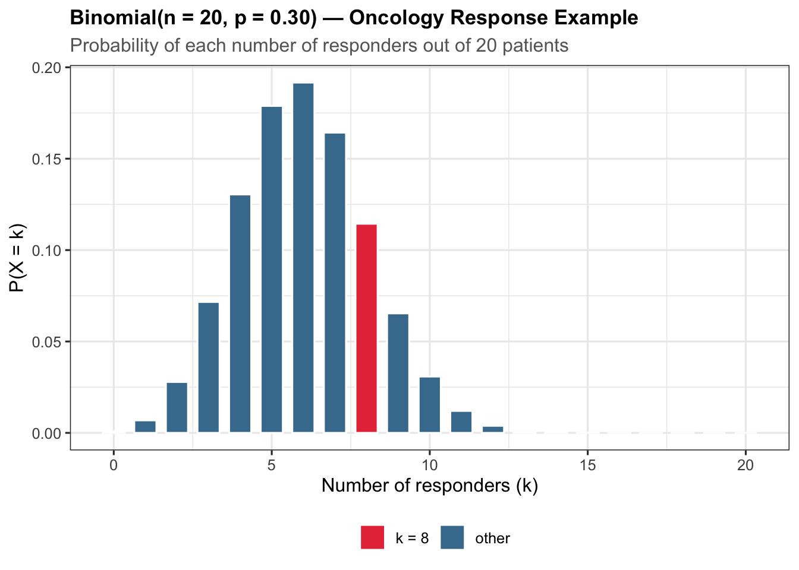
2.1.1 Comparing Response Rates Across Arms
We can overlay Binomial PMFs for different response probability assumptions:
probs_compare <- c(0.20, 0.30, 0.45)
labels_compare <- c("20% (control)", "30% (low dose)", "45% (high dose)")
pmf_data <- lapply(seq_along(probs_compare), function(i) {
data.frame(
k = 0:20,
prob = dbinom(0:20, size = 20, prob = probs_compare[i]),
group = labels_compare[i]
)
}) |> bind_rows()
ggplot(pmf_data, aes(x = k, y = prob, colour = group)) +
geom_line(linewidth = 1.1) +
geom_point(size = 2) +
scale_colour_brewer(palette = "Set1", name = "Arm") +
labs(
title = "Binomial PMFs — Three Response Rate Scenarios",
subtitle = "n = 20 patients per arm",
x = "Number of responders",
y = "Probability"
) +
theme_clinical()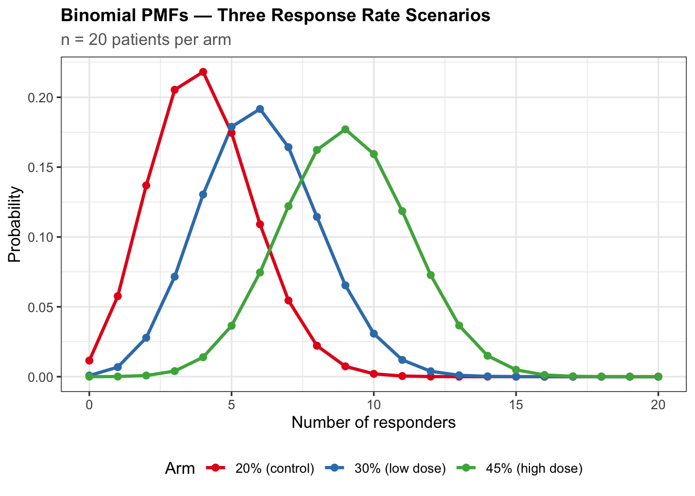
10.3.2 2.2 Poisson Distribution
The Poisson distribution models the number of events occurring in a fixed interval when events happen independently at a constant rate \(\lambda\):
\[P(X = k) = \frac{e^{-\lambda} \lambda^k}{k!}, \quad k = 0, 1, 2, \ldots\]
\[E[X] = \lambda, \qquad \text{Var}(X) = \lambda\]
Clinical example: Suppose a drug’s safety database indicates a serious adverse event (SAE) rate of 2.1 per 100 patient-years. For a 200-patient trial with a mean exposure of 0.8 years, the expected total SAE count is \(\lambda = 2.1 \times 200 \times 0.8 / 100 = 3.36\). What is the probability of observing 5 or more SAEs?
# Poisson AE rate modelling
lambda_sae <- 2.1 / 100 # events per patient-year
n_patients <- 200
mean_yrs <- 0.8
lambda_total <- lambda_sae * n_patients * mean_yrs
cat(sprintf("Expected SAE count: %.2f\n", lambda_total))#> Expected SAE count: 3.36prob_5plus <- ppois(4, lambda = lambda_total, lower.tail = FALSE)
cat(sprintf("P(SAEs >= 5) = %.4f\n", prob_5plus))#> P(SAEs >= 5) = 0.2484# Distribution of possible SAE counts
k_range <- 0:15
poisson_pmf <- dpois(k_range, lambda = lambda_total)
# Tabulate
poisson_tbl <- data.frame(
k = k_range,
Probability = round(poisson_pmf, 4),
Cumulative = round(ppois(k_range, lambda = lambda_total), 4)
)
print(head(poisson_tbl, 12))#> k Probability Cumulative
#> 1 0 0.0347 0.0347
#> 2 1 0.1167 0.1514
#> 3 2 0.1961 0.3475
#> 4 3 0.2196 0.5671
#> 5 4 0.1845 0.7516
#> 6 5 0.1240 0.8755
#> 7 6 0.0694 0.9450
#> 8 7 0.0333 0.9783
#> 9 8 0.0140 0.9923
#> 10 9 0.0052 0.9975
#> 11 10 0.0018 0.9993
#> 12 11 0.0005 0.9998ggplot(data.frame(k = k_range, prob = poisson_pmf),
aes(x = k, y = prob,
fill = ifelse(k >= 5, ">=5 SAEs", "<5 SAEs"))) +
geom_col(colour = "white", width = 0.7) +
scale_fill_manual(values = c(">=5 SAEs" = "#E63946", "<5 SAEs" = "#2A9D8F"),
name = "") +
labs(
title = "Poisson(λ = 3.36) — SAE Count Distribution",
subtitle = "200 patients × 0.8 years; SAE rate = 2.1 per 100 patient-years",
x = "Number of SAEs",
y = "P(X = k)"
) +
theme_clinical()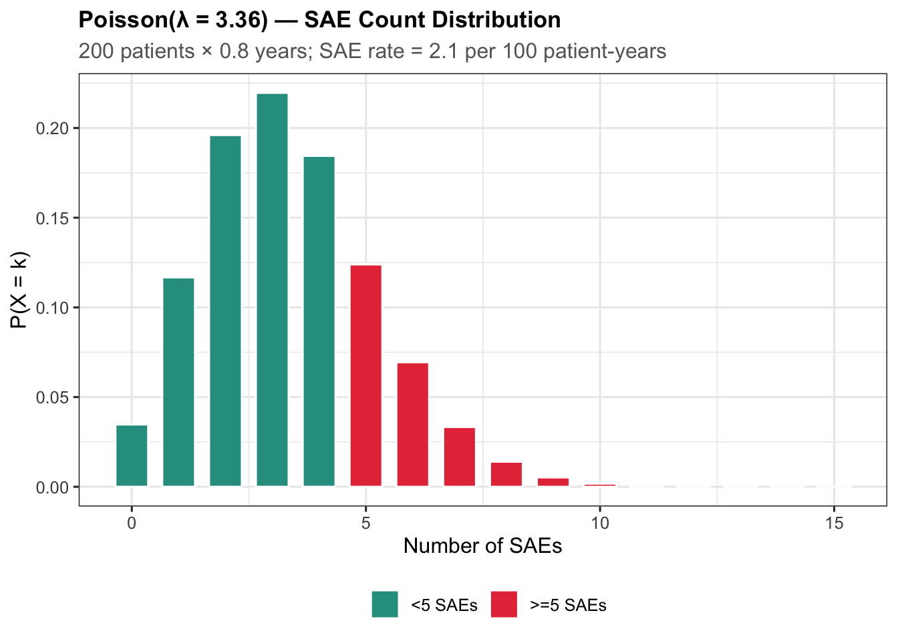
2.2.1 Simulating AE Rates with Poisson
set.seed(42)
# Simulate per-patient AE counts for three arms
n_per_arm <- 87 # typical phase III arm size
ae_placebo <- rpois(n_per_arm, lambda = 0.8)
ae_low <- rpois(n_per_arm, lambda = 1.4)
ae_high <- rpois(n_per_arm, lambda = 2.0)
ae_sim <- data.frame(
AE_count = c(ae_placebo, ae_low, ae_high),
ARM = rep(c("Placebo", "Xanomeline Low Dose",
"Xanomeline High Dose"), each = n_per_arm)
)
# Summary
ae_sim |>
group_by(ARM) |>
summarise(
Mean_AEs = round(mean(AE_count), 2),
SD_AEs = round(sd(AE_count), 2),
Rate_per_100 = round(mean(AE_count) * 100, 1)
)#> # A tibble: 3 × 4
#> ARM Mean_AEs SD_AEs Rate_per_100
#> <chr> <dbl> <dbl> <dbl>
#> 1 Placebo 0.91 0.92 90.8
#> 2 Xanomeline High Dose 1.86 1.38 186.
#> 3 Xanomeline Low Dose 1.38 1.05 138.10.4 3. Continuous Distributions
10.4.1 3.1 Normal Distribution
The Normal (Gaussian) distribution is central to parametric statistics. Its PDF is:
\[f(x) = \frac{1}{\sigma\sqrt{2\pi}} \exp\!\left(-\frac{(x-\mu)^2}{2\sigma^2}\right), \quad -\infty < x < \infty\]
\[E[X] = \mu, \qquad \text{Var}(X) = \sigma^2\]
# Standard Normal: P(-1.96 < Z < 1.96)
prob_95ci <- pnorm(1.96) - pnorm(-1.96)
cat(sprintf("P(-1.96 < Z < 1.96) = %.4f\n", prob_95ci))#> P(-1.96 < Z < 1.96) = 0.9500# Critical values for common significance levels
alpha_levels <- c(0.10, 0.05, 0.025, 0.01)
z_crits <- qnorm(1 - alpha_levels)
cat("\nCritical values (one-tailed):\n")#>
#> Critical values (one-tailed):for (i in seq_along(alpha_levels)) {
cat(sprintf(" alpha = %.3f -> z = %.4f\n", alpha_levels[i], z_crits[i]))
}#> alpha = 0.100 -> z = 1.2816
#> alpha = 0.050 -> z = 1.6449
#> alpha = 0.025 -> z = 1.9600
#> alpha = 0.010 -> z = 2.3263# Clinical example: Systolic blood pressure in a population
# SBP ~ Normal(mu=125, sigma=15)
mu_sbp <- 125
sigma_sbp <- 15
# P(SBP > 140): probability of hypertensive range
prob_hyper <- pnorm(140, mean = mu_sbp, sd = sigma_sbp, lower.tail = FALSE)
cat(sprintf("P(SBP > 140) = %.4f (%.1f%%)\n",
prob_hyper, prob_hyper * 100))#> P(SBP > 140) = 0.1587 (15.9%)# 90th percentile SBP
q90_sbp <- qnorm(0.90, mean = mu_sbp, sd = sigma_sbp)
cat(sprintf("90th percentile SBP = %.1f mmHg\n", q90_sbp))#> 90th percentile SBP = 144.2 mmHgx_sbp <- seq(80, 175, length.out = 500)
df_sbp <- data.frame(x = x_sbp, y = dnorm(x_sbp, mu_sbp, sigma_sbp))
ggplot(df_sbp, aes(x, y)) +
geom_line(linewidth = 1.2, colour = "#1D3557") +
geom_area(data = df_sbp |> filter(x >= 140),
aes(x, y), fill = "#E63946", alpha = 0.4) +
geom_vline(xintercept = 140, linetype = "dashed", colour = "#E63946") +
annotate("text", x = 152, y = 0.012,
label = sprintf("P(SBP>140)\n= %.1f%%", prob_hyper * 100),
colour = "#E63946", size = 3.5) +
labs(
title = "Normal(μ=125, σ=15) — Systolic Blood Pressure",
subtitle = "Shaded area: proportion in hypertensive range (>140 mmHg)",
x = "SBP (mmHg)",
y = "Density"
) +
theme_clinical()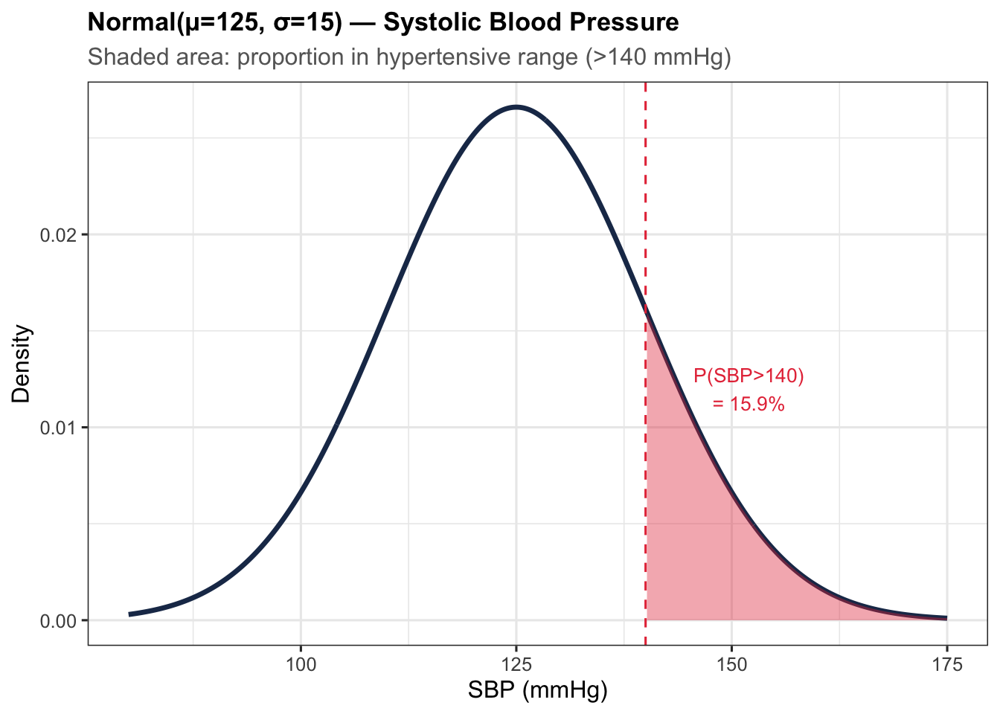
10.4.2 3.2 Student’s t-Distribution
The t-distribution with \(\nu\) degrees of freedom arises when estimating the population mean from a sample with unknown variance. As \(\nu \to \infty\), it converges to the standard Normal.
\[f(t) = \frac{\Gamma\!\left(\frac{\nu+1}{2}\right)}{\sqrt{\nu\pi}\,\Gamma\!\left(\frac{\nu}{2}\right)} \left(1 + \frac{t^2}{\nu}\right)^{-\frac{\nu+1}{2}}\]
x_t <- seq(-5, 5, length.out = 400)
dfs <- c(1, 3, 10, 30)
t_df <- lapply(dfs, function(df_val) {
data.frame(x = x_t,
y = dt(x_t, df = df_val),
df_label = paste0("t (df=", df_val, ")"))
}) |> bind_rows()
# Add Normal reference
norm_ref <- data.frame(x = x_t,
y = dnorm(x_t),
df_label = "Normal (reference)")
t_df <- bind_rows(t_df, norm_ref)
ggplot(t_df, aes(x = x, y = y, colour = df_label, linetype = df_label)) +
geom_line(linewidth = 1.0) +
scale_colour_manual(values = c("#E63946", "#457B9D", "#2A9D8F",
"#F4A261", "#1D3557"),
name = "") +
scale_linetype_manual(values = c("dashed","solid","solid","solid","solid"),
name = "") +
labs(
title = "Student's t-Distribution vs. Standard Normal",
subtitle = "Heavier tails with fewer degrees of freedom",
x = "t", y = "Density"
) +
coord_cartesian(ylim = c(0, 0.42)) +
theme_clinical()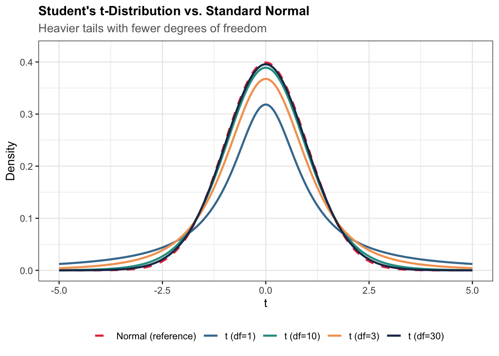
# Two-sided critical value for a t-test with 25 df at alpha=0.05
t_crit_25 <- qt(0.975, df = 25)
cat(sprintf("t-critical (df=25, alpha=0.05, two-sided): %.4f\n", t_crit_25))#> t-critical (df=25, alpha=0.05, two-sided): 2.0595# Compare with z-critical
cat(sprintf("z-critical (large sample) : %.4f\n", qnorm(0.975)))#> z-critical (large sample) : 1.960010.4.3 3.3 Chi-Square Distribution
The Chi-square distribution with \(\nu\) degrees of freedom is the distribution of the sum of squares of \(\nu\) independent standard Normal variables:
\[f(x) = \frac{x^{\nu/2 - 1} e^{-x/2}}{2^{\nu/2}\,\Gamma(\nu/2)}, \quad x > 0\]
\[E[X] = \nu, \qquad \text{Var}(X) = 2\nu\]
It is used in goodness-of-fit tests, tests of independence in contingency tables, and in constructing confidence intervals for the variance.
# Chi-square critical values
dfs_chi <- c(1, 2, 3, 5, 10)
chi_crits <- qchisq(0.95, df = dfs_chi)
cat("Chi-square 95th percentiles:\n")#> Chi-square 95th percentiles:for (i in seq_along(dfs_chi)) {
cat(sprintf(" df = %2d -> X^2_0.95 = %.3f\n",
dfs_chi[i], chi_crits[i]))
}#> df = 1 -> X^2_0.95 = 3.841
#> df = 2 -> X^2_0.95 = 5.991
#> df = 3 -> X^2_0.95 = 7.815
#> df = 5 -> X^2_0.95 = 11.070
#> df = 10 -> X^2_0.95 = 18.307x_chi <- seq(0.01, 30, length.out = 500)
dfs_plot <- c(1, 2, 3, 5, 10)
chi_df <- lapply(dfs_plot, function(df_val) {
data.frame(x = x_chi,
y = dchisq(x_chi, df = df_val),
df_label = paste0("df = ", df_val))
}) |> bind_rows()
ggplot(chi_df, aes(x = x, y = y, colour = df_label)) +
geom_line(linewidth = 1.1) +
scale_colour_brewer(palette = "Set1", name = "Degrees of freedom") +
coord_cartesian(ylim = c(0, 0.5)) +
labs(
title = "Chi-Square Distribution PDFs",
x = expression(chi^2),
y = "Density"
) +
theme_clinical()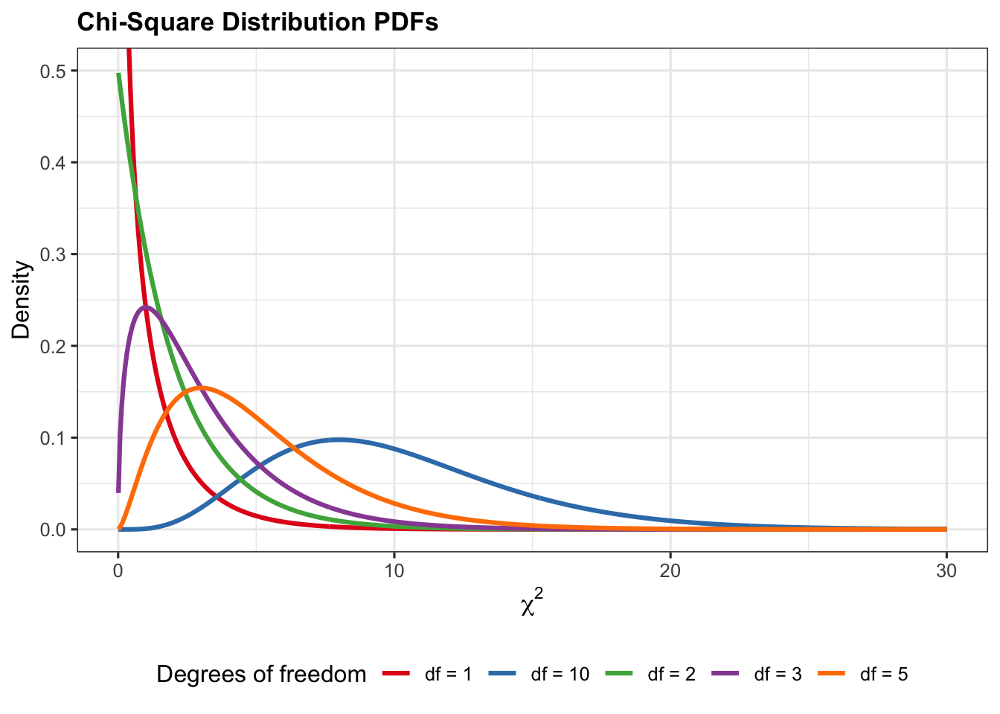
10.4.4 3.4 F-Distribution
The F-distribution with \(d_1\) and \(d_2\) degrees of freedom is the ratio of two independent Chi-square variates divided by their respective df. It underpins ANOVA and regression F-tests.
\[F = \frac{\chi^2_{d_1}/d_1}{\chi^2_{d_2}/d_2}\]
\[E[F] = \frac{d_2}{d_2 - 2} \text{ for } d_2 > 2\]
x_f <- seq(0.01, 6, length.out = 500)
f_params <- list(
list(d1 = 1, d2 = 10, lab = "F(1, 10)"),
list(d1 = 2, d2 = 20, lab = "F(2, 20)"),
list(d1 = 5, d2 = 50, lab = "F(5, 50)")
)
f_data <- lapply(f_params, function(p) {
data.frame(x = x_f,
y = df(x_f, df1 = p$d1, df2 = p$d2),
label = p$lab)
}) |> bind_rows()
ggplot(f_data, aes(x = x, y = y, colour = label)) +
geom_line(linewidth = 1.1) +
scale_colour_brewer(palette = "Dark2", name = "") +
coord_cartesian(ylim = c(0, 1.2)) +
labs(
title = "F-Distribution PDFs",
x = "F",
y = "Density"
) +
theme_clinical()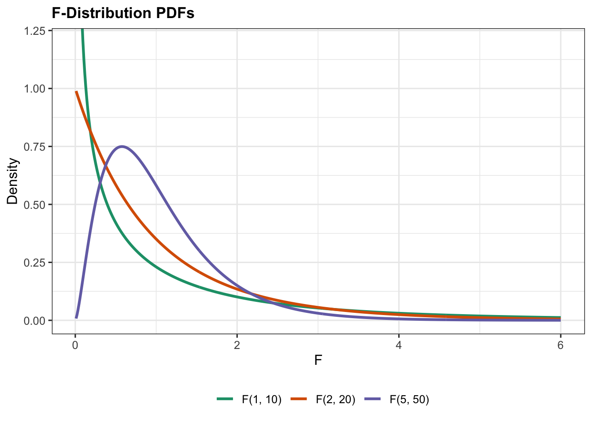
# ANOVA F critical value: 3 groups, 90 total observations
f_crit_anova <- qf(0.95, df1 = 2, df2 = 87)
cat(sprintf("F-critical for ANOVA (df1=2, df2=87, alpha=0.05): %.4f\n",
f_crit_anova))#> F-critical for ANOVA (df1=2, df2=87, alpha=0.05): 3.101310.5 4. Clinical Applications
10.5.1 4.1 Sample Size Calculation via Power Analysis
The power.t.test() function in base R solves for any one of: sample size, delta (effect size), SD, power, or significance level.
Scenario: We design a parallel-group trial to detect a mean SBP reduction of 8 mmHg (SD = 14 mmHg) relative to placebo, at two-sided \(\alpha = 0.05\) and 80 % power.
# Two-sided two-sample t-test power analysis
pwr_result <- power.t.test(
delta = 8, # clinically meaningful difference in SBP (mmHg)
sd = 14, # population standard deviation
sig.level = 0.05,
power = 0.80,
type = "two.sample",
alternative = "two.sided"
)
print(pwr_result)#>
#> Two-sample t test power calculation
#>
#> n = 49.05349
#> delta = 8
#> sd = 14
#> sig.level = 0.05
#> power = 0.8
#> alternative = two.sided
#>
#> NOTE: n is number in *each* groupcat(sprintf("\nRequired n per arm: %d (rounded up)\n",
ceiling(pwr_result$n)))#>
#> Required n per arm: 50 (rounded up)# Power curve: how does power change with sample size?
n_vals <- seq(20, 150, by = 5)
pwr_vals <- sapply(n_vals, function(n) {
power.t.test(n = n, delta = 8, sd = 14,
sig.level = 0.05, type = "two.sample")$power
})
pwr_curve <- data.frame(n = n_vals, power = pwr_vals)
ggplot(pwr_curve, aes(x = n, y = power)) +
geom_line(colour = "#1D3557", linewidth = 1.2) +
geom_hline(yintercept = 0.80, linetype = "dashed",
colour = "#E63946", linewidth = 0.9) +
geom_vline(xintercept = ceiling(pwr_result$n),
linetype = "dotted", colour = "#2A9D8F", linewidth = 0.9) +
annotate("text", x = ceiling(pwr_result$n) + 7, y = 0.55,
label = paste0("n = ", ceiling(pwr_result$n)),
colour = "#2A9D8F", size = 3.5) +
scale_y_continuous(labels = scales::percent_format()) +
labs(
title = "Power Curve — Two-Sample t-Test",
subtitle = "delta = 8 mmHg, SD = 14 mmHg, alpha = 0.05 (two-sided)",
x = "Sample size per arm",
y = "Power"
) +
theme_clinical()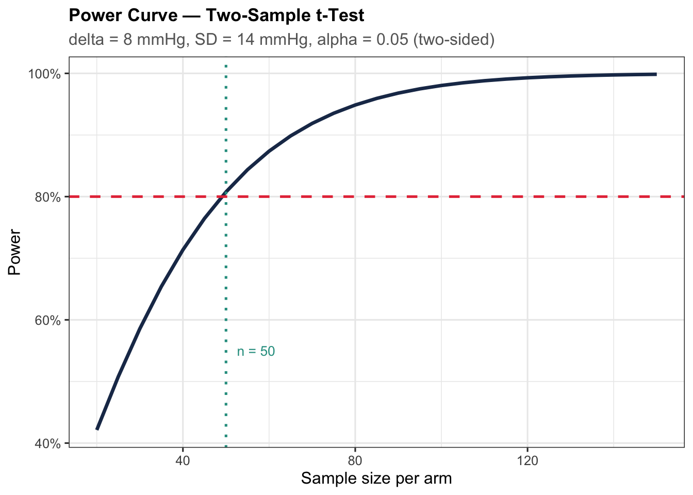
10.5.2 4.2 Adverse Event Rate Modelling with Poisson
Using the pharmaversesdtm AE dataset, we fit a simple Poisson model by arm.
library(pharmaversesdtm)
# Load datasets
data("dm")
data("ae")
# Exclude screen failures; keep randomised subjects only
dm_rand <- dm |>
filter(!is.na(ARM), ARM != "") |>
select(USUBJID, ARM, AGE, SEX)
# Count AEs per subject
ae_counts <- ae |>
group_by(USUBJID) |>
summarise(n_ae = n(), .groups = "drop")
# Merge with dm: subjects with 0 AEs need a zero count
ae_by_subj <- dm_rand |>
left_join(ae_counts, by = "USUBJID") |>
mutate(n_ae = replace_na(n_ae, 0))
head(ae_by_subj)#> # A tibble: 6 × 5
#> USUBJID ARM AGE SEX n_ae
#> <chr> <chr> <dbl> <chr> <int>
#> 1 01-701-1015 Placebo 63 F 3
#> 2 01-701-1023 Placebo 64 M 4
#> 3 01-701-1028 Xanomeline High Dose 71 M 2
#> 4 01-701-1033 Xanomeline Low Dose 74 M 0
#> 5 01-701-1034 Xanomeline High Dose 77 F 2
#> 6 01-701-1047 Placebo 85 F 4# Poisson summary by treatment arm
ae_summary <- ae_by_subj |>
group_by(ARM) |>
summarise(
N = n(),
Total_AEs = sum(n_ae),
Mean_AEs = round(mean(n_ae), 2),
Variance = round(var(n_ae), 2),
Rate_per_subj = round(mean(n_ae), 3),
.groups = "drop"
)
print(ae_summary)#> # A tibble: 4 × 6
#> ARM N Total_AEs Mean_AEs Variance Rate_per_subj
#> <chr> <int> <int> <dbl> <dbl> <dbl>
#> 1 Placebo 86 301 3.5 11.6 3.5
#> 2 Screen Failure 52 0 0 0 0
#> 3 Xanomeline High Dose 84 455 5.42 20.2 5.42
#> 4 Xanomeline Low Dose 84 435 5.18 14.0 5.18cat("\nNote: Under Poisson, Mean ≈ Variance (overdispersion if Var >> Mean)\n")#>
#> Note: Under Poisson, Mean ≈ Variance (overdispersion if Var >> Mean)ggplot(ae_by_subj, aes(x = n_ae, fill = ARM)) +
geom_histogram(binwidth = 1, colour = "white", alpha = 0.8) +
facet_wrap(~ARM, ncol = 1,
labeller = labeller(ARM = label_wrap_gen(25))) +
scale_fill_brewer(palette = "Set2", name = "Arm") +
labs(
title = "Adverse Event Count Distribution by Treatment Arm",
subtitle = "pharmaversesdtm AE dataset",
x = "Number of AEs per subject",
y = "Count of subjects"
) +
theme_clinical() +
theme(legend.position = "none")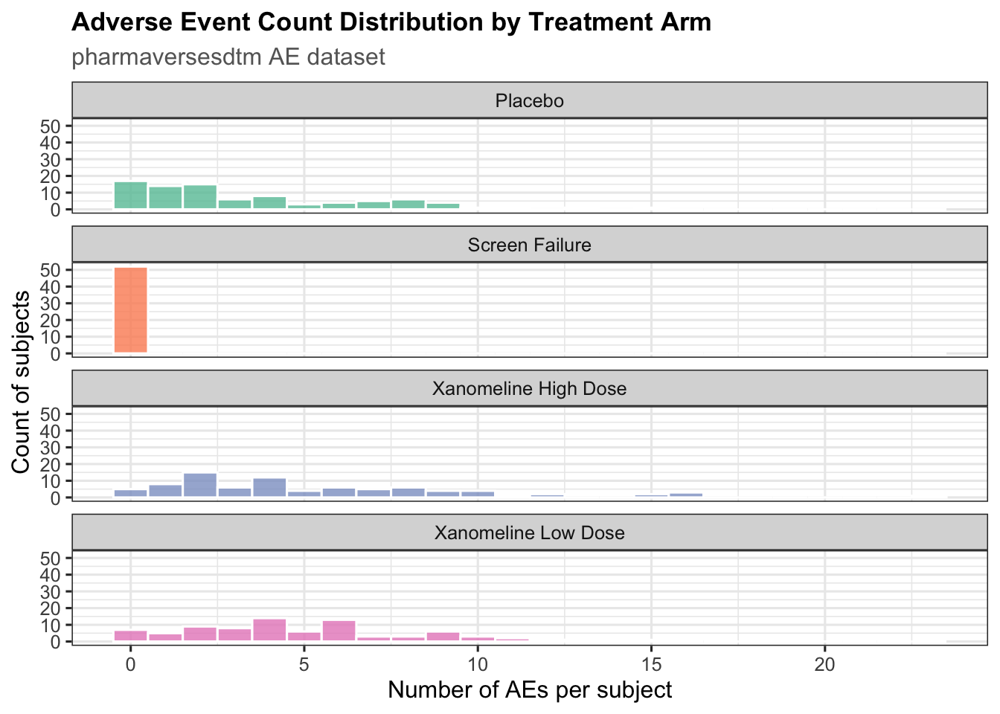
10.6 5. Simulation
10.6.1 5.1 Simulating a Complete Phase III Trial
set.seed(42)
# Trial parameters
n_arm <- 100 # subjects per arm
arms <- c("Placebo", "Xanomeline Low Dose", "Xanomeline High Dose")
# Primary endpoint: change from baseline in a clinical score
# Placebo: mean = -1, SD = 3
# Low dose: mean = -3, SD = 3
# High dose: mean = -5, SD = 3
effects <- c(-1, -3, -5)
sd_val <- 3
trial_data <- lapply(seq_along(arms), function(i) {
data.frame(
ARM = arms[i],
CFB = rnorm(n_arm, mean = effects[i], sd = sd_val),
AE_cnt = rpois(n_arm, lambda = c(1.0, 1.5, 2.2)[i])
)
}) |> bind_rows()
# Summarise
trial_data |>
group_by(ARM) |>
summarise(
N = n(),
Mean_CFB = round(mean(CFB), 2),
SD_CFB = round(sd(CFB), 2),
Mean_AEs = round(mean(AE_cnt), 2),
.groups = "drop"
)#> # A tibble: 3 × 5
#> ARM N Mean_CFB SD_CFB Mean_AEs
#> <chr> <int> <dbl> <dbl> <dbl>
#> 1 Placebo 100 -0.9 3.12 0.84
#> 2 Xanomeline High Dose 100 -4.9 2.63 2.07
#> 3 Xanomeline Low Dose 100 -3.02 2.8 1.43ggplot(trial_data, aes(x = CFB, fill = ARM)) +
geom_density(alpha = 0.55, colour = NA) +
geom_vline(data = trial_data |>
group_by(ARM) |>
summarise(m = mean(CFB), .groups = "drop"),
aes(xintercept = m, colour = ARM),
linetype = "dashed", linewidth = 1) +
scale_fill_brewer(palette = "Set1", name = "Arm") +
scale_colour_brewer(palette = "Set1", name = "Arm (mean)") +
labs(
title = "Simulated Change From Baseline — Phase III Trial",
subtitle = "Kernel density estimates; dashed lines = arm means",
x = "Change from baseline",
y = "Density"
) +
theme_clinical()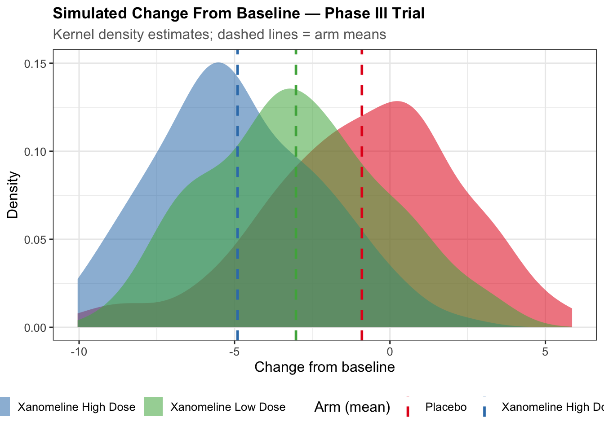
10.6.2 5.2 Monte Carlo Estimation of a p-Value
set.seed(42)
# Observed difference in means between High Dose and Placebo
obs_diff <- mean(trial_data$CFB[trial_data$ARM == "Xanomeline High Dose"]) -
mean(trial_data$CFB[trial_data$ARM == "Placebo"])
# Permutation test: shuffle arm labels 5000 times
placebo_cfb <- trial_data$CFB[trial_data$ARM == "Placebo"]
high_dose_cfb <- trial_data$CFB[trial_data$ARM == "Xanomeline High Dose"]
combined <- c(placebo_cfb, high_dose_cfb)
n_perm <- 5000
perm_diffs <- replicate(n_perm, {
shuf <- sample(combined)
mean(shuf[1:n_arm]) - mean(shuf[(n_arm+1):(2*n_arm)])
})
mc_pvalue <- mean(abs(perm_diffs) >= abs(obs_diff))
cat(sprintf("Observed difference: %.3f\n", obs_diff))#> Observed difference: -3.999cat(sprintf("Monte Carlo p-value : %.4f\n", mc_pvalue))#> Monte Carlo p-value : 0.000010.7 6. Visualisation and Diagnostics
10.7.1 6.1 QQ-Plots for Normality Assessment
A quantile-quantile (QQ) plot compares empirical quantiles of a sample against theoretical quantiles of a reference distribution. Points lying close to the diagonal line indicate the data follows the reference distribution.
# Use pharmaversesdtm dm for age data
dm_rand_age <- dm |>
filter(!is.na(ARM), ARM != "", !is.na(AGE))
ggplot(dm_rand_age, aes(sample = AGE)) +
stat_qq(colour = "#1D3557", alpha = 0.6, size = 1.5) +
stat_qq_line(colour = "#E63946", linewidth = 1) +
facet_wrap(~ARM, labeller = labeller(ARM = label_wrap_gen(25))) +
labs(
title = "Normal QQ-Plot of Subject Age by Treatment Arm",
subtitle = "pharmaversesdtm dm dataset — randomised subjects",
x = "Theoretical Normal quantiles",
y = "Sample quantiles (age, years)"
) +
theme_clinical()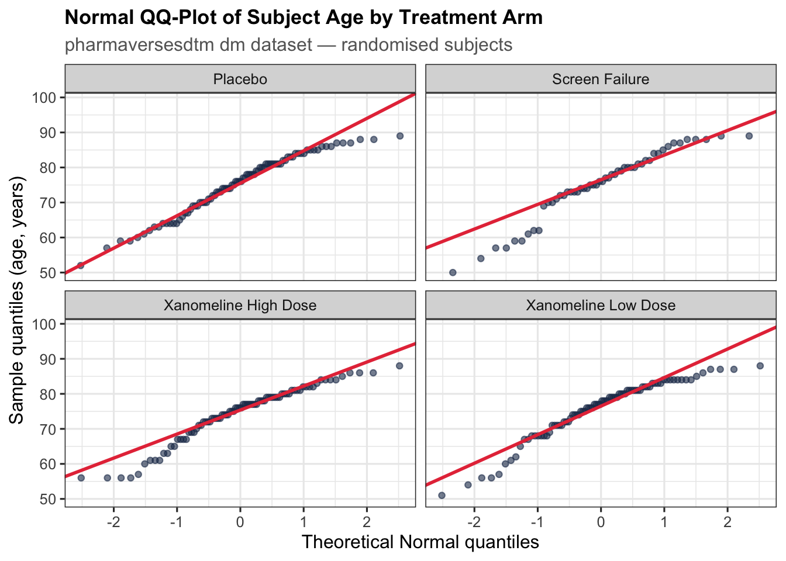
10.7.2 6.2 Overlaying Theoretical and Empirical Distributions
age_mu <- mean(dm_rand_age$AGE, na.rm = TRUE)
age_sd <- sd(dm_rand_age$AGE, na.rm = TRUE)
cat(sprintf("Age: mean = %.1f, SD = %.1f\n", age_mu, age_sd))#> Age: mean = 75.1, SD = 8.5ggplot(dm_rand_age, aes(x = AGE)) +
geom_histogram(aes(y = after_stat(density)),
bins = 20, fill = "#457B9D", colour = "white", alpha = 0.7) +
stat_function(fun = dnorm,
args = list(mean = age_mu, sd = age_sd),
colour = "#E63946", linewidth = 1.2) +
labs(
title = "Age Distribution with Fitted Normal Overlay",
subtitle = sprintf("Normal(μ=%.1f, σ=%.1f)", age_mu, age_sd),
x = "Age (years)",
y = "Density"
) +
theme_clinical()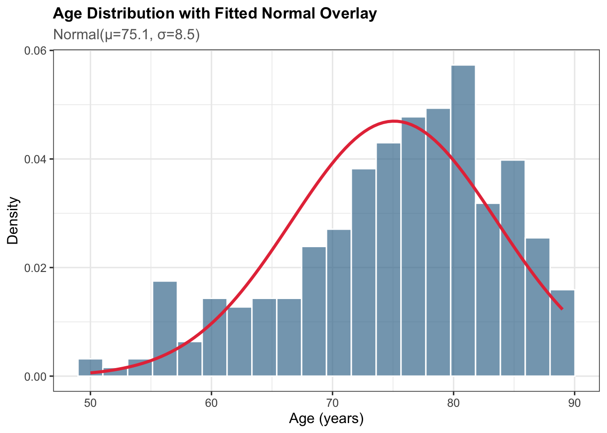
10.7.3 6.3 CDF Comparison Across Arms
ggplot(dm_rand_age, aes(x = AGE, colour = ARM)) +
stat_ecdf(linewidth = 1.1) +
scale_colour_brewer(palette = "Set1",
name = "",
labels = function(x) stringr::str_wrap(x, 20)) +
labs(
title = "Empirical CDF of Age by Treatment Arm",
subtitle = "Steep curves indicate concentrated age distributions",
x = "Age (years)",
y = "F(x) = P(AGE ≤ x)"
) +
theme_clinical()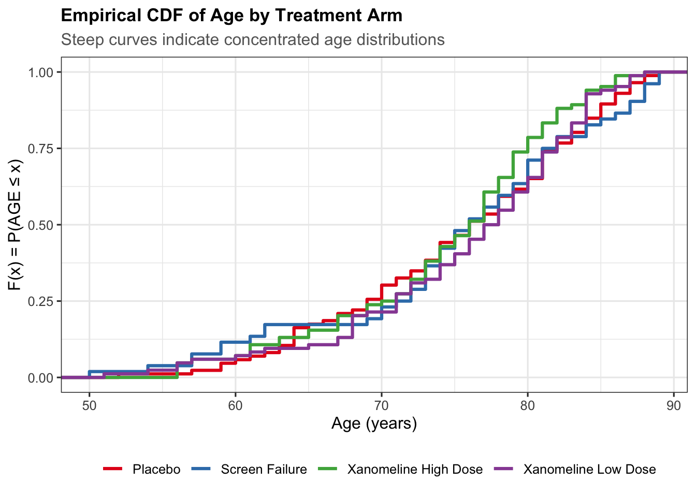
10.8 7. Summary of Key Distribution Properties
# Summary table of all distributions covered
dist_summary <- data.frame(
Distribution = c("Binomial(n,p)", "Poisson(λ)",
"Normal(μ,σ²)", "t(ν)",
"Chi-square(ν)", "F(d1,d2)"),
Type = c("Discrete","Discrete",
"Continuous","Continuous",
"Continuous","Continuous"),
Mean = c("np","λ","μ","0 (ν>1)",
"ν","d2/(d2-2) for d2>2"),
Variance = c("np(1-p)","λ","σ²",
"ν/(ν-2) for ν>2",
"2ν","complex formula"),
Clinical_Use = c("Response/event rates",
"AE counts",
"Continuous outcomes",
"Small-sample inference",
"GOF, variance tests",
"ANOVA, regression")
)
knitr::kable(dist_summary,
caption = "Summary of probability distributions in clinical research",
col.names = c("Distribution","Type","Mean","Variance","Clinical Use"))| Distribution | Type | Mean | Variance | Clinical Use |
|---|---|---|---|---|
| Binomial(n,p) | Discrete | np | np(1-p) | Response/event rates |
| Poisson(λ) | Discrete | λ | λ | AE counts |
| Normal(μ,σ²) | Continuous | μ | σ² | Continuous outcomes |
| t(ν) | Continuous | 0 (ν>1) | ν/(ν-2) for ν>2 | Small-sample inference |
| Chi-square(ν) | Continuous | ν | 2ν | GOF, variance tests |
| F(d1,d2) | Continuous | d2/(d2-2) for d2>2 | complex formula | ANOVA, regression |
10.9 Exercises
10.9.1 Beginner
Using
dbinom(), calculate the probability that fewer than 3 patients out of 15 experience a treatment-related adverse event if the true event rate is 25%.A Poisson process models laboratory abnormalities at a rate of \(\lambda = 0.5\) per patient. Use
ppois()to find the probability that a patient has 2 or more laboratory abnormalities.Given a population with a mean diastolic blood pressure of 82 mmHg and SD of 10 mmHg, use
pnorm()to find the proportion of patients with DBP above 95 mmHg.Use
qnorm()to find the SBP value below which 90% of a Normal(125, 15²) population falls.
10.9.2 Intermediate
Use
power.t.test()to find the required sample size per arm to detect a 5 mmHg difference in SBP (SD = 12 mmHg) with 90% power at a two-sided significance level of 0.05.From the pharmaversesdtm
dmdataset, filter to randomised subjects and useggplot2to create overlapping density plots of AGE stratified by SEX. Add astat_function()overlay of the best-fit Normal distribution.Simulate 1000 Binomial(n=30, p=0.40) random variables. Plot the sampling distribution of the sample proportion and overlay the Normal approximation. Comment on the quality of the approximation.
Load the
aedataset from pharmaversesdtm. Merge withdmand compute the mean AE count per arm. Fit a Poisson GLM (glm(..., family = poisson)) with ARM as the predictor and interpret the rate ratios.
10.9.3 Advanced
Bootstrap the Binomial parameter: Simulate 50 binary outcomes (Bernoulli with p = 0.35). Use 2000 bootstrap resamples to construct a 95% percentile bootstrap confidence interval for the response rate. Compare with the exact Clopper-Pearson interval from
binom.test().Power comparison simulation: For a two-sample t-test comparing means with true delta = 6 and SD = 15, run 5000 simulated trials at n = 40, 60, 80 per arm (using
set.seed(123)). Estimate the empirical power at each n and compare withpower.t.test()theoretical values. Display results in a table.Distribution selection for safety data: Using the full pharmaversesdtm
aedataset merged withdm, plot a histogram of AE counts per subject in the Placebo arm. Fit both a Poisson and a Negative Binomial distribution (using theMASSpackagefitdistr()function). Compare the log-likelihoods and AIC values, and discuss which model is more appropriate and why.